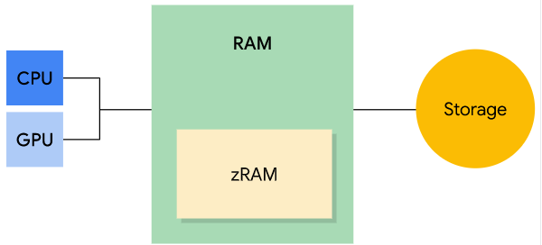
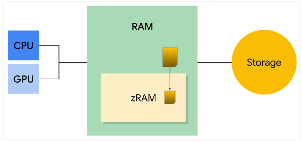

Andoid性能优化之内存管理
Android系统使用分页和内存映射来管理内存。这意味着要从应用中释放内存，只能释放应用保留的对象引用， 使内存可供垃圾回收器回收。
1、内存管理原理
- 垃圾回收
Android系统会跟踪每次内存分配。一旦确定程序不再使用某块内存，它会将该内存释放到堆中。这个过程就是我们常说的"垃圾回收"。 垃圾回收有两个目标：查找将来无法访问的对象，并回收这些对象。
尽管垃圾回收速度非常快，但仍会影响应用的性能。系统执行垃圾回收时，会停止执行进程。 如果在播放视频或音乐时发生垃圾回收，可能导致代码执行超过 16ms 的阈值，此时用户会感到卡顿。
此外，程序在某些时刻（如for循环内部）频繁的创建对象，可能会导致执行多个垃圾回收事件，并可能降低应用性能。
- 系统对内存的限制
Android 系统会为每个应用的可用内存设置上限，不同设备的上限取决于设备的总体可用RAM大小。 应用的内存使用达到上限后如果请求分配更多内存，则可能会收到OOM。
有时，我们需要获取应用的可用内存上限，以此确定应该使用多少内存来缓存数据。通过调用getMemoryClass() 查询当前设备上确切可用的内存大小。此方法返回一个整数，以MB为单位。
ActivityManager mActivityManager = (ActivityManager) getSystemService(Context.ACTIVITY_SERVICE); //可用内存大小，单位MB int enableMemorySize = mActivityManager.getMemoryClass(); -
内存类型
Android 设备包含三种不同类型的内存：RAM、zRAM 和 储存器（我把他理解为机身存储空间）。请注意，CPU 和 GPU 访问同一个RAM。
- RAM速度最快，但大小有限。高端设备通常具有更大的RAM容量。
- zRAM是用于交换空间的RAM的分区。数据在进入zRAM时会被压缩，从zRAM取出是会被解压。zRAM的大小随着处理的数据量动态变化。设备制造商可以设置zRAM上限
- 储存器包含所有持久性数据。容量比 RAM 和 zRAM 大的多。
-
内存页面
RAM将内存分为一个一个“页面”，通常每个页面为4KB。系统将页面分为“可用”和“已使用”。可用页面是未使用的RAM。已使用的页面是系统正在使用的RAM，并分为以下类别：
- 缓存页：有储存器中的文件（例如代码）支持的内存。缓存内存有两种类型：
- 私有页：由一个进程拥有且未共享
- 干净页：储存器中未经修改的文件副本，可由kswapd（内核交换守护进程，将已用内存装换为可用内存）删除已增加可用内存
- 脏页：储存器中经过修改的文件副本；可由kswapd移动到zRAM 或 在zRAM中进行压缩，以增加可用内存
- 共享页：多个进程共享
- 干净页：储存器中未经修改的文件副本，可由kswapd删除已增加可用内存
- 脏页：储存器中经过修改的文件副本；可由 kswapd（移动到zRAM 或 在zRAM中进行压缩 ） 或者 通过明确使用 msync() 或 munmap() 将更改写回存储器中的文件，以增加可用内存
- 私有页：由一个进程拥有且未共享
- 匿名页：没有储存器中的文件支持的内存
-
脏页：可由kswapd移动到 zRAM 或 在zRAM中进行压缩，以增加可用内存。
干净页可以删除，因为始终可以使用存储器中的数据重新生成它们；脏页则不能删除，否则数据将会丢失。
- 缓存页：有储存器中的文件（例如代码）支持的内存。缓存内存有两种类型：
- 内存分配
Android 系统在运行时不会浪费可用的内存，它会一直尝试利用所有可用内存。例如：应用关闭后，系统会将其保存在内存中，以便用户快速切回到这些应用。 所以，Android设备在运行时几乎没有空闲内存。那么要在系统进程和应用之间正确分配内存，内存管理就显的非常重要。
Android 处理内存不足的机制主要有两种：内核交换守护进程（kswapd） 和 低内存终止守护进程
内核交换守护进程
内核交换守护进程（kswapd）是Linux内核的一部分，用于将已使用内存装换为可用内存。当可用内存降至下限阈值时，kswapd开始回收内存。当可用内存达到上限阈值时，kswapd停止回收内存。
干净页回收：kswapd 会删除干净页已回收内存，因为这些页受到存储器的支持且未经修改。如果某个进程需要这些数据时，系统会将该页面从存储器复制到RAM中。此操作被称为“请求分页”。如下图：
脏页回收：kswapd 可以将缓存的私有脏页（注意：不包括共享脏页） 和 匿名脏页 移动到zRAM，这样可以释放RAM中的可用内存。如果某个进程要处理 zRAM 中的脏页，该脏页会被移回到RAM。 如果与 zRAM 中的脏页关联的进程被终止，那么该脏页将从 zRAM 中删除。如下图：
低内存终止守护进程
很多时候，kswapd 不能为系统释放足够的内存。此时，系统会通过 onTrimMemory() 通知应用内存不足，应该减少其分配。 如果还不够，系统开始终止进程以释放内存。系统使用低内存终止守护进程（LMK）来执行此操作。
LMK 会对运行中的进程确定优先级，优先级越高的进程越先被终止。优先级从高到低排序如下：
后台应用 > 上一个应用(最近用过的后台应用) > 服务 > 可觉察的应用(例如显示了小界面的音乐App) > 前台应用(当前正在使用的应用) > 系统应用和服务
2、内存管理实践
RAM（运行内存）在系统中是一项宝贵资源。在开发中，我们要避免引入内存泄漏问题，并在适当的时间（如Activity的onDestory()内）释放引用。 内存泄漏定义：内存泄漏（Memory leak）是在计算机科学中，由于疏忽或错误造成程序未能释放已经不再使用的内存。从而造成内存的浪费。--维基百科。 下面的部分，将从 积极减少应用的内存使用量 和 防止内存泄漏 两个方面来讨论一下如何高效使用RAM。
- 积极减少应用的内存使用量
- 查看应用内存使用情况
应用在运行时，可以使用的内存是有上限的，这一上限因设备而异。当应用 可用内存 用尽时，应用继续请求分配更多的内存，此时系统会抛出 OutOfMemoryError。
通过以下代码我们可以查询设备当前的内存状态，包括可用内存、总内存、内存阈值（如果达到此内存级别，系统会开始终止进程）、和设备是否内存不足。
public void doSomethingMemoryIntensive() { //在执行需要大量内存的操作之前，检查设备是否处于低内存状态。 ActivityManager.MemoryInfo memoryInfo = getAvailableMemory(); if (!memoryInfo.lowMemory) { // 可以开始做使用大量内存的操作 } } // 获取设备当前的内存状态 private ActivityManager.MemoryInfo getAvailableMemory() { ActivityManager activityManager = (ActivityManager) this.getSystemService(ACTIVITY_SERVICE); ActivityManager.MemoryInfo memoryInfo = new ActivityManager.MemoryInfo(); activityManager.getMemoryInfo(memoryInfo); return memoryInfo; } -
编写代码时，综合考虑空间复杂度(省内存)和时间复杂度(速度快)。运行快且省内存的代码，固然是最好的。 但开发中的普遍情况却是二者取其一。
-
不需要某项服务时，立即停止其运行。持久性服务，导致部分RAM不可再回收，甚至可能导致系统出现抖动。 考虑使用 JobScheduler 或 IntentService 代替持久性服务。
-
使用 SparseArray、SparseBooleanArray 和 LongSparseArray 代替HashMap。在Android平台，它们的效率高于HashMap。
- 避免内存抖动
垃圾回收对应用性能的影响微乎其微。不过，如果在短时间内发生大量的垃圾回收事件(内存抖动)，可能会让用户感到卡顿。 内存抖动说明在某一时间段内出现大量的临时对象分配。例如 for 循环内部 和 onDraw() 函数内部。
-
移除占用大量内存的库和资源
缩减APK大小，可显著降低应用的内存使用量。如果只是使用第三方库的部分功能，可以只引入需要的代码（自己把需要的代码抄一遍）
- 查看应用内存使用情况
- 防止内存泄漏
一个对象不需要再使用了，应该被回收。但如果有另一个正在使用的对象，错误的引用了它，导致系统无法回收。这就是我们说的内存泄漏。 在开发中，当用户关闭页面时，注意释放所有对该页面的引用（例如网路请求回调的内部该对页面的引用）。
开发中，为了防止内存泄漏，推荐使用弱引用包裹可能泄露的对象。示例代码如下：
//创建静态内部类 private static class MyHandler extends Handler { //持有MainActivity的弱引用 //GC回收时,如果用户还停留在MainActivity，此时MainActivity被系统强引用，不会被回收。 //GC回收时,如果用户已关闭MainActivity，此时对象只被弱引用，会被回收。 private final WeakReference<MainActivity> mActivity; public MyHandler(MainActivity activity) { mActivity = new WeakReference<>(activity); } @Override public void handleMessage(Message msg) { MainActivity activity = mActivity.get(); if (activity != null) { //可调用activity的方法,刷新页面...... } } }- 补充知识，java语言的4种引用类型：
- 强引用(StrongReference)，绝不会回收它，Java虚拟机宁愿抛出OutOfMemoryError错误。A a = new A()
- 软引用(SoftReference)，内存空间足够，不会回收。内存空间不足时会被回收
- 弱引用(WeakReference)，Java虚拟机扫描到只具有弱引用的对象，那么不管当前内存是否充足，都会回收它的内存
- 虚引用(PhantomReference)，约等于没有引用，任何时候都可被回收